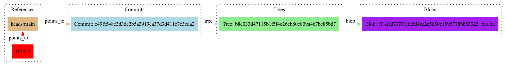
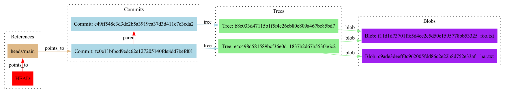
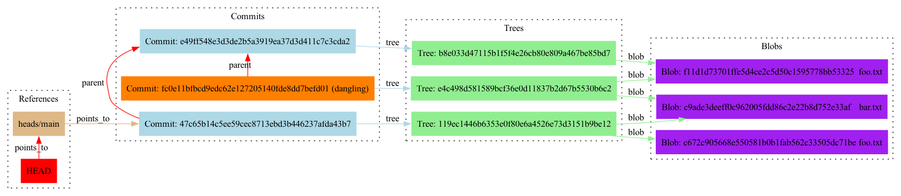
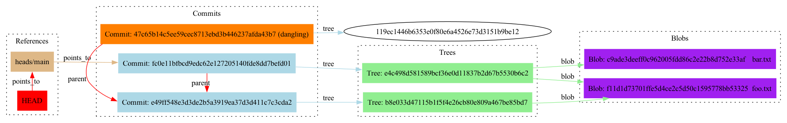

back
back
Understanding git a lil better
Introduction
Despite using Git daily for years, I don't understand it very well. I stick to a few core workflows:
- Edit or create some files,
addthem, andcommitthem. pushcommits to a remote repository, andpull --rebaseto get the latest changes, resolving any merge conflicts.- Work on different features in branches, with
branch. - Update files or a commit message for a commit, with
commit --amend. checkouta branch or specific commit to see files at a previous point in time.cherry-picka commit into a branch to pull in a specific change.
I've always treated these Git commands as black boxes. It's enough to get by and to collaborate. But the second that anything slightly outside of these workflows arises, I totally crumble. For example, I might edit some files, hoping to create a new commit for the changes. But then instead of typing git commit, I accidentally type git commit --amend, and now I've amended whatever the latest commit was. In this situation, I'm truly defeated. Folks, I'm not proud of this, but whenever this happens, I copy my work to a temporary directory, then checkout a different branch; delete the branch I was just on with git branch -D; then create a brand new branch, and copy the temporary directory back to get myself back to the state before the bad amend.
I really wanted to finally invest some time in understanding what Git is doing under the hood, so I could resort to these sad reconciliations less frequently. For an exercise, I walked through what exactly Git does in this particular bad-amend scenario. It was a useful way to get comfortable with these concepts:
- How does Git represent the state of a repository, and how can we inspect the state?
- What's
reflog? - What does
git resetdo?
Git internals crash course
To understand what Git does under the hood in this situation, we need a short crash course on how Git's internals are represented.
Git stores all of its state for a repository in a hidden directory called .git, which first appears when you type git init. It represents most of the state as objects, which are stored in .git/objects/ and are are identified by hashes. When storing an object hash, Git creates a directory with the first two characters of the hash, and then a file with the remainder of the hash inside that directory. So if we have an object hash f517306d2b259fb35c9a1ed9cb2d3d6aa9e278b7, it is stored as .git/objects/f5/17306d2b259fb35c9a1ed9cb2d3d6aa9e278b7.
If you have a Git repository of your own, you can poke around the objects in its .git/objects/. You can inspect an object with git cat-file -p <hash>, where <hash> is the hash of the object.
There are three different types of objects found in .git/objects/.
- A blob stores the content of a file that was at some point committed.
- The content of the file is compressed to save space.
- If you
git cat-file -pa blob, it will print the contents of the file.
- A tree stores the state of a directory at some point.
- It contains pointers to blobs for each file it knows about. It also points to more trees, corresponding to the subdirectories it contains.
git cat-file -pwill print out pointers to each blob and subtree.
- A commit points to a tree, and represents the repository at various snapshots.
- It's comprised of:
- a pointer to a tree object, which holds the state of the files at the commit.
- a pointer to a parent commit, which represents the commit that was committed previously.
git cat-file -pwill print out pointers to its tree and parents.- When you type
git log, you'll see the latest commit, as well as the list of commits reachable by parent pointers.
- It's comprised of:
A branch turns out then to be simply a label, a pointer to a commit object. HEAD is a pointer that points to the branch that we have checked out.
In the next section, we'll walk through some specific examples of all of these concepts.
Inspect Git's internals in a small repository
To understand all this better, I wanted to do a few operations in a trivial repository. I wanted to do the operations, then ls .git/objects and inspect the objects with git cat-file -p <sha> and graph them out. Even with a puny little repo, this became extremely tedious, so I worked with some AI chatbots to write a script to automate the process.
Feel free to download the script and follow along with the commands in this post, in your own demo repository if you like. Or you can just read along!
Create a file
First, we start with an empty repository. We create a single file, add it, and commit it:
mkdir my-repo && cd my-repo && git init
echo "Hello, foo." > foo.txt
git add foo.txt
git commit -m "Create foo.txt."
./generate_graphviz.sh # Follow the instructions at https://github.com/tedbauer/git-objects-graphviz so this is possible!
dot -Tpng git_graph.dot > output.png
open output.png
After we run the visualization script, we see:

Hello, foo. is encoded as a blob, which you can verify with git cat-file -p f11d1d73701ffe5d4ce2c5d50c1595778bb53325:
$ git cat-file -p f11d1d73701ffe5d4ce2c5d50c1595778bb53325
Hello, foo.
(The SHA is generated from the file contents; you'll see the SHA in the generated image. You can see all SHA's with git rev-list --objects -g --no-walk --all; that's what the script uses.)
A tree is also created, which points to this blob. A commit is also created, and main and HEAD both point to this commit.
$ # Examine the commit.
$ git cat-file -p 97bbbf1e9732892b9372ec74de09824a311d8469
tree b8e033d47115b1f5f4e26cb80e809a467be85bd7
author tedbauer <email> 1743356553 -0400
committer tedbauer <email> 1743356553 -0400
Create foo.txt.
$ # Examine the tree.
$ git cat-file -p b8e033d47115b1f5f4e26cb80e809a467be85bd7
100644 blob f11d1d73701ffe5d4ce2c5d50c1595778bb53325 foo.txt
Create a second file
We add a second file, add it, commit it.
echo "Hello, bar." > bar.txt
git add bar.txt
git commit -m "Create bar.txt."
./generate_graphviz.sh
dot -Tpng git_graph.dot > output.png
open output.png

This creates a second blob holding Hello, bar. A new tree is created to point to this new blob, as well as the previous blob that holds Hello, foo. A new commit points to this new tree, its parent pointer points to the first commit. HEAD and main point to the new commit.
Edit the first file, and amend the previous commit
Now we edit the first file, we amend instead of creating a new commit.
echo "New content to append to foo." >> foo.txt
git add foo.txt
git commit --amend # We accidentally amended insteading of committing :(
What happens when we do that?

In fact, a completely new commit object is created, which main and HEAD point to now. A new blob stores the content Hello, foo. New content to append to foo. A new tree is committed that points to this updated foo.txt blob, as well as bar.txt.
The commit that we previously had still exists, and points to the original blob for foo.txt. But it's unreachable from HEAD.
Fix the issue
To fix the issue, we need to move the main and HEAD pointers back to the previous commit, and leave the files in our repository as they are currently. Then, it would be as though we had never run git commit --amend. To find this dangling commit, we can use git reflog (short for reference-log).
The reflog keeps a history of where HEAD has been pointing:
$ git reflog
cc23c30 (HEAD -> main) HEAD@{0}: commit (amend): Create bar.txt.
2f2c993 HEAD@{1}: commit: Create bar.txt.
47991ab HEAD@{2}: commit (initial): Create foo.txt.
The HEAD@{N} syntax means HEAD, whatever it was N transitions ago; distinct from HEAD^N, which traverses HEAD's parent pointers N times.
We need to find the commit before the amend command. Looking at the ref log, looks like we can use 2f2c993, the commit right before HEAD transitioned to cc23c30.
To move HEAD to this commit, we use git reset --soft 2f2c993. This changes the HEAD pointer, but it leaves our repository files unchanged.
Now, if we run git status:
$ git status
On branch main
Changes to be committed:
(use "git restore --staged <file>..." to unstage)
modified: foo.txt
Git can see that we've edited foo.txt, but haven't committed the changes yet, just like we wanted!
After generating and checking the graph again, the pointers are back to normal, and now that bad commit is the one that's dangling:

Conclusion
Now, I will never delete my branch again if this happens, at least for this particular case!